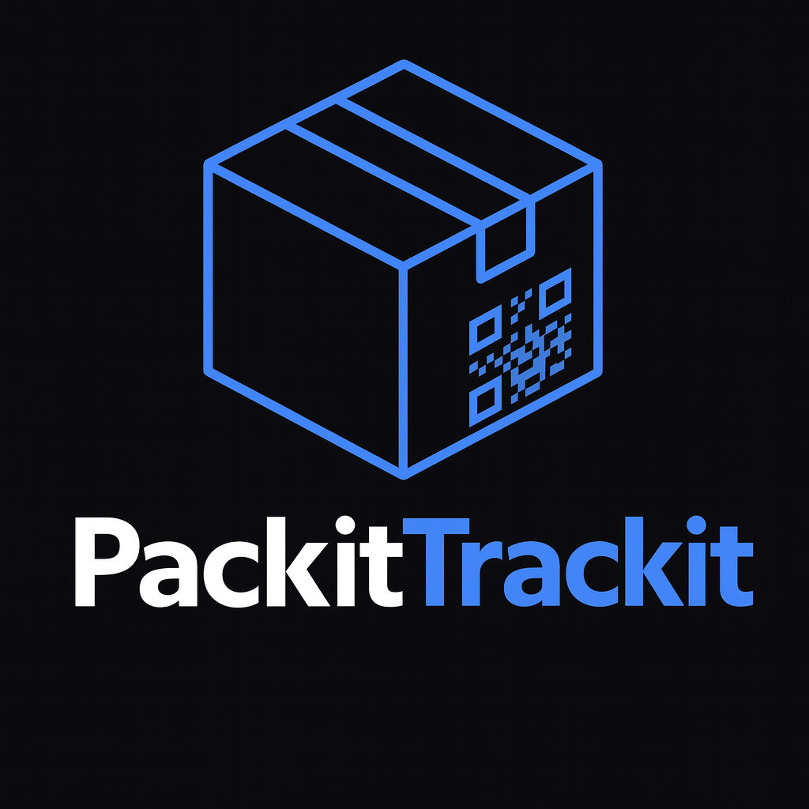
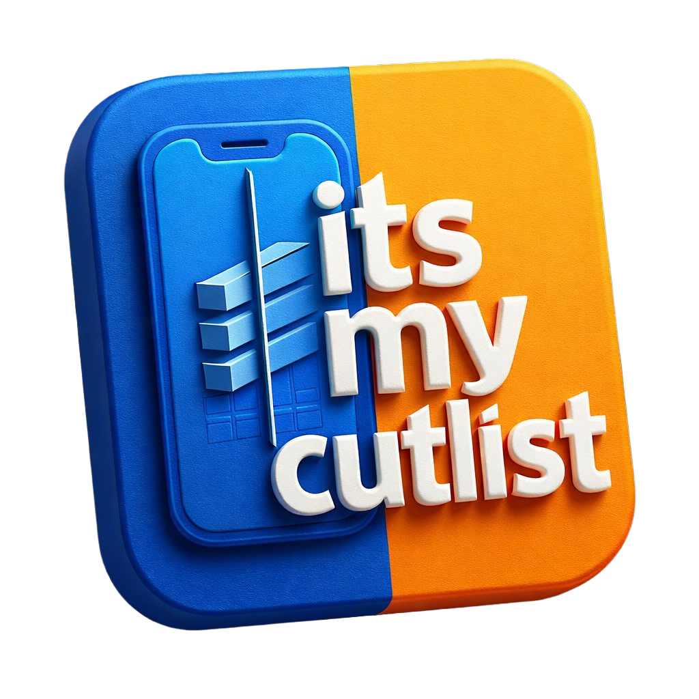
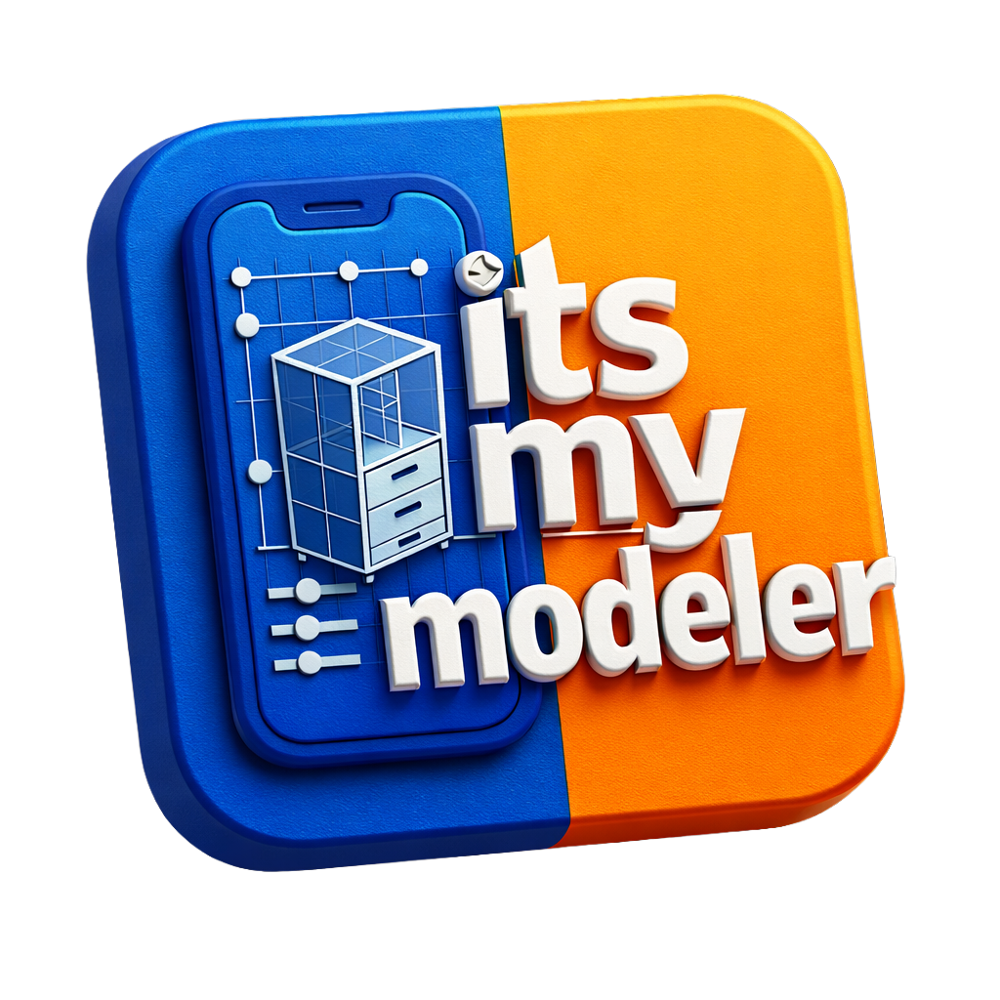

DIGITAL BROCHURE PORTFOLIO: ITSMYAPP.CO.UK
Welcome to the official operational layout and copy for itsmyapp.co.uk and brochure.itsmyapp.co.uk. This document serves as a complete, unified digital brochure designed for seamless presentation across mobile and desktop browser nodes, explicitly optimized for legacy hardware deployment such as the iPad (iOS 10.3.3).
SECTION 1: THE TRUST, ARCHITECTURE, & COMPLIANCE MANIFESTO
COMPLIANCE MD FOR FUTURE APPS
Every software application engineered, deployed, and hosted within the itsmyapp.co.uk matrix is bound to a strict, non-negotiable architectural framework. Built natively into the client-side execution layer, each app features autonomous, self-contained modules providing:
- Dynamic Cookie Consent Banner
- Comprehensive Terms of Service (ToS)
- Zero-Leak Privacy Policy
- Granular Cookie Policy
- Universal Accessibility Statement
Compliance, transparency, and data integrity are integrated directly into the source code out of the box, requiring zero external tracking calls or third-party dependencies.
The Zero-Server Privacy Paradigm
Modern enterprise software suffers from a structural data-surveillance defect. Traditional Software-as-a-Service (SaaS) ecosystems continuously ingest, aggregate, analyze, and monetize your operational metrics, inventory sheets, and financial margins on multi-tenant cloud infrastructure.
We reject this centralized model entirely.
Our portfolio operates on a strict, pure Zero-Server Architecture. By utilizing localized browser runtimes and localized client-side execution layers, 100% of your operational intelligence remains sandboxed inside your active device environment.
- Zero Data Retention Risk: There are no external cloud databases to breach, leak, or compromise.
- Zero Interception Vectors: Proprietary metadata, operational logs, and sensitive configurations never transit across a multi-tenant backend server.
- Instantaneous Edge Execution: 100% of compute cycles happen directly on your local silicon hardware. This completely eliminates network latency, guarantees offline resilience, and maximizes transactional throughput.
SECTION 2: THE DETAILED APPLICATION ARCHITECTURE

01. PackitTrackit
PackitTrackit fundamentally reengineers the chaotic, error-prone manual labeling paradigms associated with packing, high-density moving, and complex collection management. It bridges physical localization tokens with deterministic client-side database execution.
Core Technical Mechanics
- Deterministic Tracking Vectors: Generates and pairs high-density, unique identification tokens (QR codes) with specific physical containers, boxes, or storage modules.
- AI-Enhanced Visual Capture: Indexes container contents via localized image analysis and visual logging before sealing, embedding a highly descriptive, visually verifiable digital payload linked directly to the physical token.
- Localized Sub-Second Indexing: Bypasses external cloud querying entirely. Uses localized relational indexes to pinpoint individual items across distributed physical footprints in fractions of a second.
Specialized Domain Configurations
- The Educational Institution / School Edition: Engineered specifically for structured academic environments, classrooms, and workshops. Features dedicated tracking vectors for high-value classroom equipment, school assets, and native integration for COSHH (Control of Substances Hazardous to Health) regulatory compliance logging.
- The Collectors & Logistics Edition: Tailored for ultra-high-density storage arrays, domestic relocations, and high-value physical asset portfolios where visual clarity without unsealing containers is mission-critical.
02. Whole Hospitality
Whole Hospitality is an analytical software environment and structural consulting blueprint designed to insulate hospitality margins against supplier volatility, inflationary pressures, and operational waste.
| Operational Module | Core Technical Function | Tangible Business Outcome |
|---|---|---|
| Dynamic GP Calculator | Executes mathematical Gross Profit modeling against raw, real-time invoice adjustments from vendors. | Eradicates margin drift; enables instantaneous, algorithmic menu re-pricing and recipe re-engineering. |
| Frictionless Workflows | High-speed, lightweight data entry interfaces optimized for high-tempo kitchen and cellar environments. | Slashes administrative labor overhead compared to legacy software. |
| Compliance & Waste Auditor | Localized logging for operational shrinkage, spoilage, and mandatory regulatory metrics. | Establishes absolute audit readiness for food safety inspectors without cloud exposure. |
Operational Architecture
Whole Hospitality strips away the bloated weight of classic legacy hospitality suites. Instead of requiring permanent internet connectivity and heavy back-end synchronization cycles, the system executes fluidly on the floor. Proprietors, chefs, and cellar managers evaluate yields, log shrinkage, and calculate dish expenses directly at the physical point of operation.

03. Its My Cutlist
Its My Cutlist is a high-performance optimization utility built for joiners, commercial fabricators, shopfitters, and custom material creators. It eliminates raw material waste by computing exact geometric material distribution profiles before a tool touches a surface.
Core Architectural Capabilities
- Multi-Dimensional Nesting Optimization: Executes complex combinatorial optimization math to compute the absolute highest yield for sheet materials (MDF, Plywood, Acrylic, Solid Surface) and linear profiles (timber, extrusion).
- Parametric Component Modeler: Empowers operators to establish adaptive geometric design rules. When a master boundary constraint is modified, all internal component dimensions scale dynamically and update the cutting matrix automatically.
- Reclamation & Offcut Tracking: Tracks and logs historical sheet remnants and offcuts locally, automatically forcing the nesting engine to prioritize leftover stock pieces for subsequent project layouts.
- High-Fidelity Vector Blueprints: Generates clean, high-contrast, low-tolerance cutting paths that can be read clearly on a dusty workshop floor or exported as structural layout profiles.
04. Its My Screen
Its My Screen completely dismantles the predatory, subscription-based Digital Signage SaaS model. It transforms any consumer or commercial display node into a high-performance visual asset using nothing but a client-side browser runtime.
Key Performance Features
- Infrastructure-Free Deployment: Requires no proprietary external hardware players, fragile media dongles, or ongoing cloud licensing agreements.
- Dynamic Local Asset Provisioning: Update menu boards, pricing tiers, layout matrices, or promotional graphics instantly via a lean, local input control layout.
- Total Network Disconnection Immunity: Unlike classic signage networks that crash to an error screen or display a spin-loop when Wi-Fi drops, Its My Screen runs entirely on persistent client-side caching. If local networking fails entirely, the display continues rendering flawlessly and indefinitely.
SECTION 3: FUTURE R&D HORIZONS (DEVELOPMENT PIPELINE)

3D Furniture Modeler
An upcoming, professional-grade 3D environment built natively on the Three.js WebGL framework. Purpose-built to conform strictly with UK Standard Manufacturing Dimensions, this module allows for the rapid digital prototyping of bespoke wardrobes, kitchen cabinetry, and custom structural furniture components.
The interface features complete parametric scaling—adjusting total height, width, or depth automatically recalibrates internal shelving, partitions, hardware placement, and material thickness tolerances. Crucially, the Modeler features a native data pipeline to Its My Cutlist, converting complete 3D structural designs into optimized, ready-to-cut physical fabrication plans with a single tap.
SECTION 4: THE TECHNICAL INFRASTRUCTURE PROFILE
The engineering stack powering itsmyapp.co.uk is unified under a lightweight, high-speed, modern standard suite to maximize computational velocity and enforce strict user data isolation:
SECTION 5: TARGET DEVICE OPTIMIZATION GUIDE (iPAD iOS 10.3.3)
To ensure this digital brochure renders with razor-sharp layout precision and flawless, fluid touch interactions on a Version 10.3.3 iPad (Legacy WebKit Mobile Safari), the codebase at brochure.itsmyapp.co.uk must enforce the following compiler configurations:
- JavaScript Transpilation (Babel Target ES5/ES6): The legacy browser engine on iOS 10.3.3 will instantly throw uncatchable runtime errors if it encounters modern ECMAScript features. Ensure your Next.js build pipeline completely transpiles optional chaining (?.), nullish coalescing (??), arrow functions, and spread operators into classic JavaScript syntax.
- CSS Layout Safety Layer: Modern Tailwind utilities utilizing CSS Grid or the flexbox gap attribute lack reliable native layout parsing inside iOS 10 Safari. Use explicit margins and structural paddings inside standard WebKit-prefixed Flexbox structures to prevent rendering collapses.
- Hardware Acceleration Optimization: To prevent memory-induced tab crashes on older Apple A-series SOC architectures, compile the brochure using standard static HTML export methods (next export). Minimize heavy, long-running runtime JS animations during slide transitions to maintain a polished, professional 60fps face-to-face client presentation.